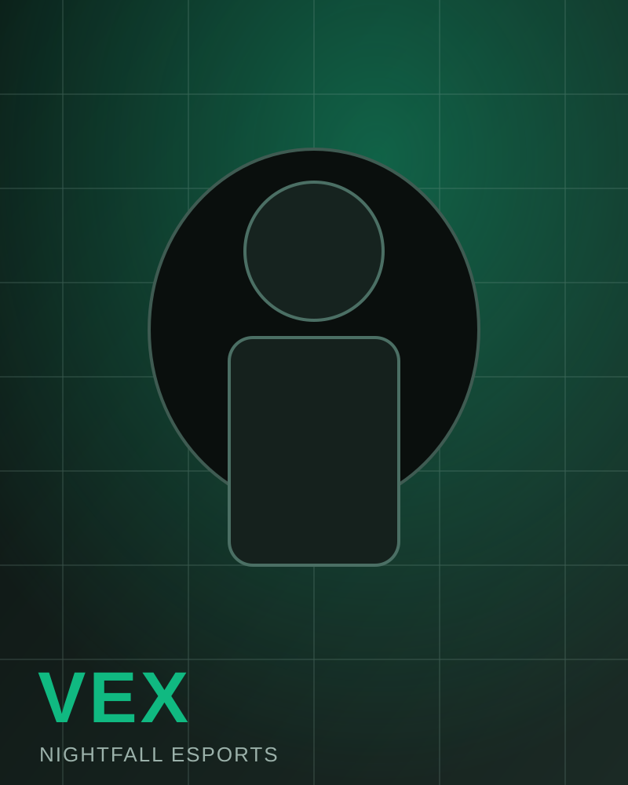
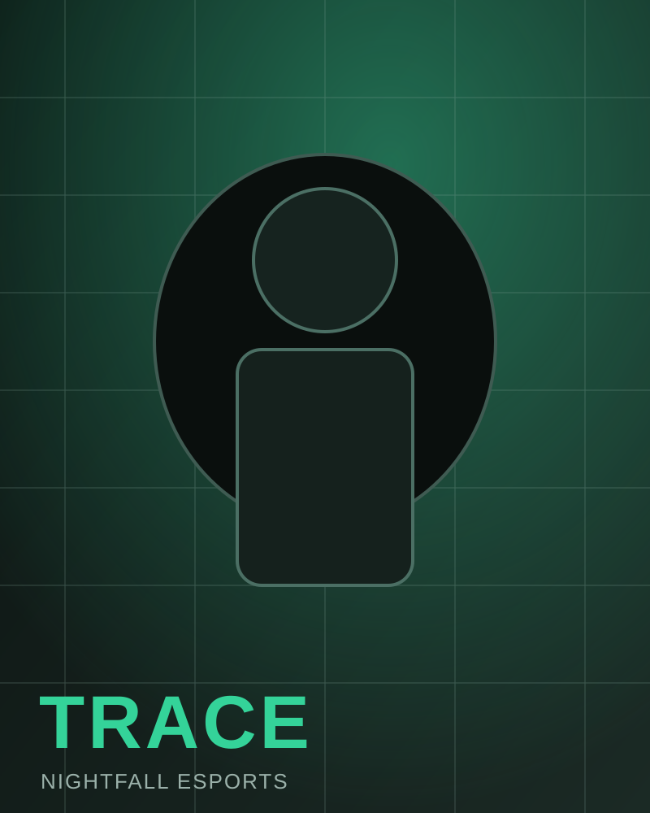
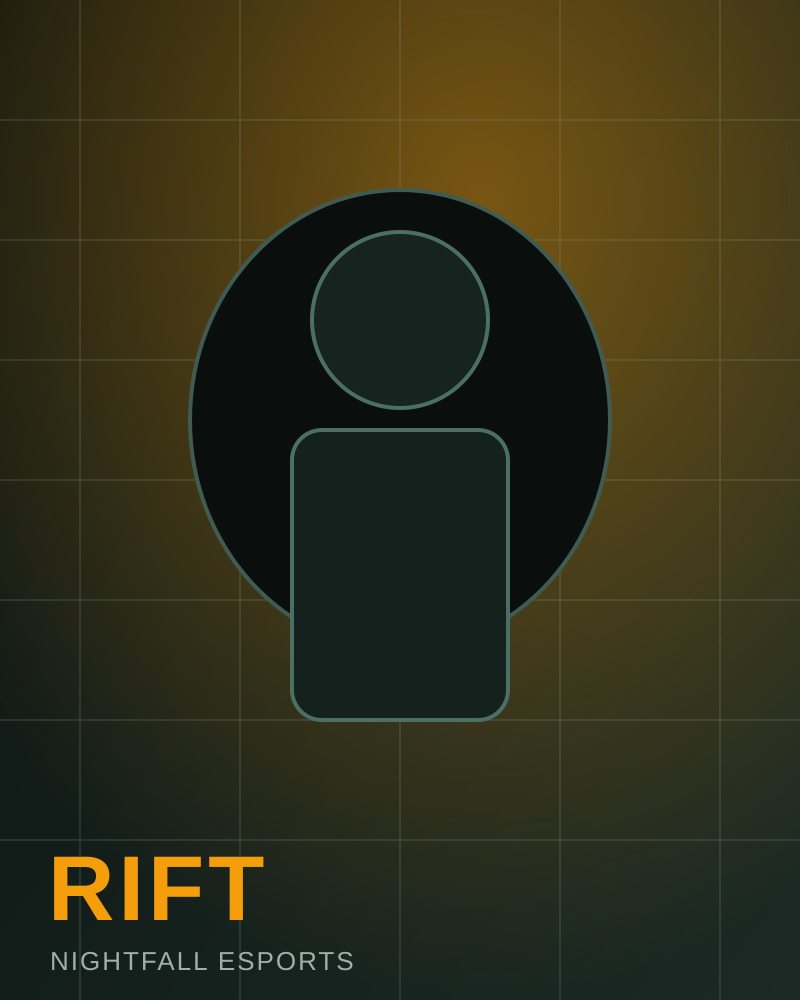
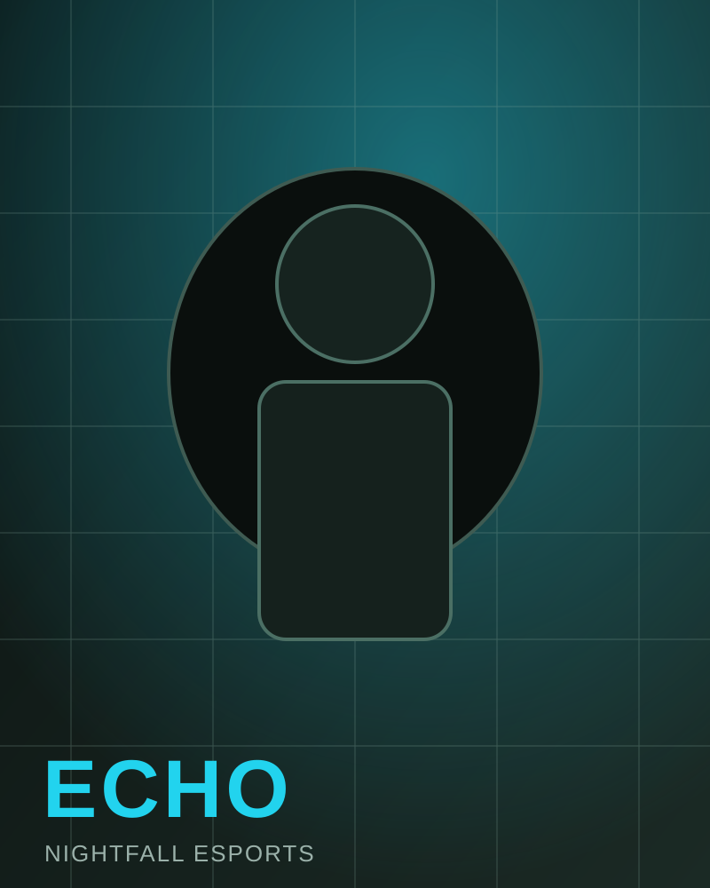
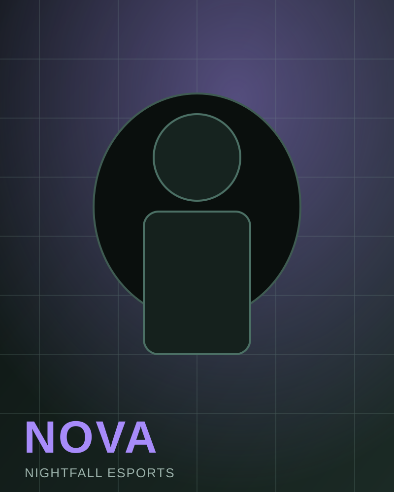

VEX
IGL / Mid-round Caller
KAST 75%Clutch 67%
Role clarity and coordinated spacing are core to Nightfall's map control approach.

IGL / Mid-round Caller

Primary AWP

Entry Fragger

Support / Utility

Anchor / Closer
Weekly cycle includes anti-strat prep, map-specific scrims, and post-match VOD review with objective callout tracking.
Each player owns two high-priority maps and one flex map to keep veto structure stable in qualifiers.